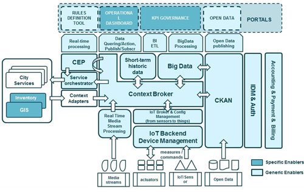

5. Arquitectura Big Data
5.1. Introducción a la Arquitectura de Big Data
La arquitectura de Big Data se refiere al diseño general del sistema que permite almacenar, procesar, y analizar grandes volúmenes de datos. Esta arquitectura debe manejar el flujo de datos desde su recolección, a través de su procesamiento y análisis, hasta su visualización y toma de decisiones. Características clave:
- Escalabilidad: Debe ser capaz de escalar tanto vertical como horizontalmente para manejar crecientes volúmenes de datos.
- Disponibilidad: Los sistemas deben estar disponibles en todo momento, incluso ante fallos de hardware.
- Flexibilidad: Capacidad para adaptarse a distintos tipos de datos (estructurados, no estructurados, semiestructurados).
- Velocidad: Necesidad de procesar datos rápidamente, en tiempo real o casi real.
5.2. Componentes de la Arquitectura de Big Data
5.2.1. Ingesta de Datos (Data Ingestion)
Este es el primer componente de la arquitectura, que implica la recolección de datos desde múltiples fuentes. Los datos pueden ser generados a gran velocidad y de manera continua, por lo que el sistema debe ser capaz de capturarlos de manera eficiente.
Herramientas de Ingesta:
- Batch Processing (procesamiento por lotes): Herramientas como Apache Sqoop (para importar datos desde bases de datos relacionales a Hadoop), y Apache Flume (para recopilar datos de logs o eventos).
- Stream Processing (procesamiento en tiempo real): Apache Kafka, Apache Nifi, Amazon Kinesis permiten la recolección y distribución de flujos de datos en tiempo real.
5.2.2. Almacenamiento de Datos
El almacenamiento de Big Data debe soportar grandes volúmenes de datos, manejar datos estructurados y no estructurados, y permitir consultas eficientes. Aquí entran en juego tecnologías de almacenamiento distribuidas.
Sistemas de archivos distribuidos:
-
HDFS (Hadoop Distributed File System): Almacena datos en bloques distribuidos en varios nodos. Es altamente escalable y tolerante a fallos. Amazon S3: Almacenamiento en la nube para grandes cantidades de datos no estructurados. Popular en arquitecturas basadas en la nube. Bases de datos NoSQL:
-
HBase: Base de datos distribuida basada en columnas para datos grandes y semiestructurados.
- Cassandra: Base de datos distribuida altamente escalable que maneja grandes volúmenes de datos y está optimizada para alta disponibilidad sin punto único de fallo.
- MongoDB: Base de datos NoSQL orientada a documentos, ideal para datos semi-estructurados y no estructurados.
Data Lakes vs Data Warehouses:
- Data Lakes: Almacenan datos crudos y procesados en su formato nativo. Herramientas como HDFS y Amazon S3 son comunes. Los datos se transforman según las necesidades.
- Data Warehouses: Sistemas optimizados para el análisis de grandes cantidades de datos estructurados, como Amazon Redshift, Google BigQuery, o Apache Hive.
5.2.3. Procesamiento de Datos
Una vez que los datos han sido almacenados, necesitan ser procesados para convertirlos en información útil. El procesamiento puede ser en batch (lote) o en tiempo real (streaming), dependiendo de los casos de uso.
Procesamiento Batch:
- Apache Hadoop (MapReduce): Sistema que divide el procesamiento de grandes conjuntos de datos en tareas más pequeñas que se ejecutan en paralelo en múltiples nodos. Útil para procesamiento de grandes volúmenes de datos.
- Apache Spark: Procesa datos mucho más rápido que Hadoop gracias a su manejo en memoria. Permite realizar análisis complejos, machine learning, y procesamiento de datos en tiempo real con Spark Streaming.
Procesamiento en Tiempo Real:
- Apache Storm: Plataforma de computación distribuida para procesar grandes volúmenes de datos en tiempo real.
- Apache Flink: Orientado al procesamiento en tiempo real y por lotes, con capacidad para realizar análisis de alta precisión y baja latencia.
- Kafka Streams: Framework de procesamiento de flujos de datos sobre Apache Kafka.
5.2.4. Análisis de Datos
El siguiente paso es el análisis de los datos para extraer patrones, tendencias o cualquier información relevante. Dependiendo del tipo de análisis, se pueden usar diferentes técnicas:
- Predictivo: El análisis predictivo implica utilizar técnicas estadísticas para hacer predicciones sobre eventos futuros basándose en datos históricos. Este enfoque puede aplicarse para generar conocimientos sobre tendencias o comportamientos futuros.
Se utilizan herramientas como:
- Apache Mahout: Biblioteca de machine learning que trabaja sobre Hadoop y Spark.
- Spark MLlib: Biblioteca de aprendizaje automático dentro del ecosistema de Apache Spark, para realizar regresiones, clasificaciones, clustering, etc.
- De diagnóstico: El análisis de diagnóstico utiliza algoritmos para descubrir patrones y relaciones dentro de grandes conjuntos de datos. Este enfoque puede aplicarse para extraer información útil de grandes volúmenes de datos no estructurados o semiestructurados.
-
Descriptivo: El análisis descriptivo es un método de análisis de datos que se utiliza para resumir y describir sus características principales. Se utiliza comúnmente para proporcionar una visión general de los datos y para identificar patrones y tendencias. Se utilizan herramientas como:
- Apache Hive o Apache Drill para realizar consultas SQL sobre datos almacenados en HDFS o Data Lakes.
- Elasticsearch y Kibana para búsquedas avanzadas y análisis de logs o eventos en tiempo real.
Uso
El análisis descriptivo puede utilizarse para obtener información a partir de conjuntos de datos grandes y complejos. Por ejemplo, una empresa podría utilizar el análisis descriptivo para entender la demografía de su base de clientes o para identificar patrones en el comportamiento de los clientes.
-
Prescriptivo con Big Data: El análisis prescriptivo es un tipo de análisis de datos que utiliza técnicas avanzadas de análisis, como el aprendizaje automático y los algoritmos de optimización, para sugerir acciones que se pueden tomar para lograr un resultado deseado.
Uso
El análisis prescriptivo puede utilizarse para tomar decisiones basadas en datos a partir de la información obtenida a partir de conjuntos de datos grandes y complejos. Por ejemplo, una empresa podría utilizar el análisis prescriptivo para optimizar su cadena de suministro o para determinar la mejor estrategia de precios para sus productos.
5.2.5. Visualización de Datos
Los resultados del análisis deben presentarse de forma comprensible para los responsables de la toma de decisiones.
Herramientas de visualización:
- Tableau: Popular herramienta de visualización interactiva que permite la creación de dashboards.
- Power BI: Herramienta de Microsoft para análisis de datos y creación de informes dinámicos.
- Grafana: Para la creación de paneles de control en tiempo real.
- D3.js: Librería de JavaScript para crear visualizaciones web personalizadas e interactivas.
5.2.6. Seguridad y Gobernanza de Datos
Es vital que la arquitectura contemple políticas y mecanismos de seguridad para proteger la integridad, confidencialidad y disponibilidad de los datos.
Mecanismos de seguridad:
- Cifrado de datos: Cifrado en tránsito (SSL, TLS) y en reposo (cifrado de archivos).
- Autenticación y Autorización: Sistemas como Kerberos para la autenticación de usuarios y control de acceso.
Gobernanza de datos:
- Apache Atlas: Herramienta de gobernanza para Hadoop que ayuda en la clasificación de datos, auditoría, y gestión de políticas de acceso.
- AWS Glue: Servicio de AWS para la gestión del catálogo de datos y la preparación de datos.
5.2.7. Orquestación y Automatización
En entornos de Big Data, es crucial automatizar y orquestar las diferentes tareas y flujos de trabajo de datos.
- Apache Airflow: Plataforma de orquestación de flujos de trabajo que permite la automatización de procesos de ingesta, procesamiento, y análisis de datos.
- Apache Oozie: Herramienta para la programación y gestión de trabajos Hadoop.
5.3. Ejemplos de Arquitectura de Big Data
5.3.1. Arquitectura Lambda
Diseñada para procesar datos tanto en tiempo real como en lotes. Tiene dos capas principales:
- Batch Layer: Procesa datos históricos para generar vistas de alto rendimiento (e.g., Apache Hadoop).
- Speed Layer: Procesa datos en tiempo real para proporcionar resultados con baja latencia (e.g., Apache Storm, Kafka).

5.3.2. Arquitectura Kappa
Similar a Lambda, pero optimizada para el procesamiento de flujos en tiempo real. No necesita una capa separada para el procesamiento por lotes.

5.3.3. Arquitectura de una Smart City basada en IoT
- Ingesta de datos de múltiples sensores en tiempo real (tráfico, iluminación, calidad del aire) mediante Apache Kafka.
- Almacenamiento en un Data Lake (HDFS o S3) y procesamiento en tiempo real con Apache Flink o Kafka Streams para generar insights en tiempo real.
- Visualización de resultados en dashboards interactivos usando Grafana o Power BI.
